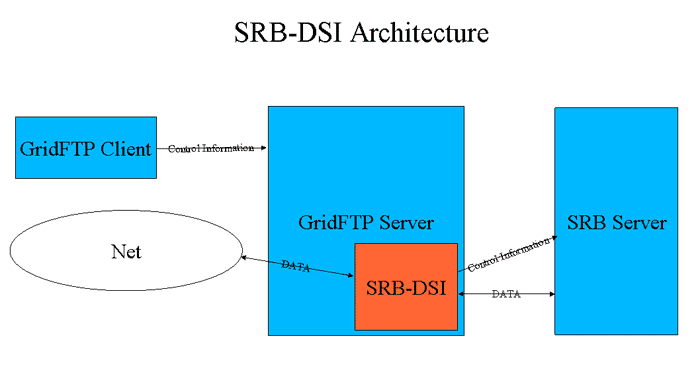

This guide contains advanced configuration information for system administrators working with GridFTP. It provides references to information on procedures typically performed by system administrators, including installation, configuring, deploying, and testing the installation. This guide should help you configure and run the GridFTP server in some standard configurations.
This information is in addition to the basic Grid Community Toolkit prerequisite, overview, installation, security configuration instructions in the Installing GCT 6.0. Read through this guide before continuing!
Building and Installing
Building and Installing GridFTP
GridFTP is built and installed as part of a default GCT 6.0 installation. For basic installation instructions, see Installing GCT 6.0. No extra installation steps are required for this component.
If you wish to install GridFTP without installing the rest of the Grid Community Toolkit, follow the instructions in the above link but just use the group install target globus-gridftp with Linux native packages and make target gridftp (make gridftp) with source installer.
Building and Installing a static GridFTP server
[only a static GridFTP server]
If you wish to build and install a statically linked set of GridFTP binaries from the source installer, follow the instructions on GCT installation from the source installer in the link above but use the following for configure and make:
globus% ./configure --prefix=
globus% make gpt globus_gridftp_server
Enabling Threading in GridFTP
In GCT 6.0 the GridFTP server and the client globus-url-copy are non-threaded by default. To enable threading, set the environment variable GLOBUS_THREAD_MODEL=pthread. On the server, threading can be enabled using command-line option -threads 1 as well.
Configuring GridFTP
GridFTP server configuration overview
[overview]
The configuration interface for GridFTP is the admin tool, , which can be used with a configuration file and/or run-time options.
|
Note
|
Command line options and configuration file options may both be used, but the command line overrides the config file. |
The configuration file for the GridFTP server is read from the following locations, in the given order. Only the first file found will be loaded:
-
Path specified with the
-c <configfile>command line option. -
$GLOBUS_LOCATION/etc/gridftp.conf -
/etc/grid-security/gridftp.conf
Options are one per line, with the format:
<option> <value>
If the value contains spaces, they should be enclosed in double-quotes ("). Flags or boolean options should only have a value of 0 or 1. Blank lines and lines beginning with # are ignored.
For example:
port 5000 allow_anonymous 1 anonymous_user bob banner "Welcome!"
For complete command documentation including all options, see .
Typical configuration
The following describes a typical GridFTP configuration of the front end (control channel) and back end (data channels). For other alternatives that provide greater levels of security, see Advanced Configuration.
By default, the data channel and control channel are separate socket connections within the same process. The client sends a command and waits to finish before issuing the next command. This is good for a single host, traditional-type user. If you have a single host and you want an ultra-reliable and light weight file transfer service, this is a good choice. This configuration is also good for testing purposes.
Firewall requirements
If the GridFTP server is behind a firewall:
-
Contact your network administrator to open up port 2811 (for GridFTP control channel connection) and a range of ports (for GridFTP data channel connections) for the incoming connections. If the firewall blocks the outgoing connections, open up a range of ports for outgoing connections as well.
-
Set the environment variable GLOBUS_TCP_PORT_RANGE:
export GLOBUS_TCP_PORT_RANGE=min,max
where min,max specify the port range that you have opened for the incoming connections on the firewall. This restricts the listening ports of the GridFTP server to this range. Recommended range is 1000 (e.g., 50000-51000) but it really depends on how much use you expect.
-
If you have a firewall blocking the outgoing connections and you have opened a range of ports, set the environment variable GLOBUS_TCP_SOURCE_RANGE:
export GLOBUS_TCP_SOURCE_RANGE=min,max
where min,max specify the port range that you have opened for the outgoing connections on the firewall. This restricts the GridFTP server to bind to a local port in this range for outbound connections. Recommended range is twice the range used for GLOBUS_TCP_PORT_RANGE, because if parallel TCP streams are used for transfers, the listening port would remain the same for each connection but the connecting port would be different for each connection.
|
Note
|
If the server is behind NAT, the |
If the GridFTP client is behind a firewall:
-
Contact your network administrator to open up a range of ports (for GridFTP data channel connections) for the incoming connections. If the firewall blocks the outgoing connections, open up a range of ports for outgoing connections as well.
-
Set the environment variable GLOBUS_TCP_PORT_RANGE
export GLOBUS_TCP_PORT_RANGE=min,max
where min,max specify the port range that you have opened for the incoming connections on the firewall. This restricts the listening ports of the GridFTP client to this range. Recommended range is 1000 (e.g., 50000-51000) but it really depends on how much use you expect.
-
If you have a firewall blocking the outgoing connections and you have opened a range of (local) ports, set the environment variable GLOBUS_TCP_SOURCE_RANGE:
export GLOBUS_TCP_PORT_RANGE=min,max
where min,max specify the port range that you have opened for the outgoing connections on the firewall. This restricts the GridFTP client to bind to a local port in this range for outbound connections. Recommended range is twice the range used for GLOBUS_TCP_PORT_RANGE, because if parallel TCP streams are used for transfers, the listening port would remain the same for each connection but the connecting port would be different for each connection.
Additional information on Grid Community Toolkit Firewall Requirements is available here.
Configuring Security for GridFTP
There are many security options in GridFTP ranging from no security to higher security via GSI .
Anonymous mode
Anonymous mode (using the -aa option) allows any user with an FTP client to read and write (and delete) files that the server process can similarly access (it is also a quick way to test that your server works).
globus% globus-gridftp-server -aa Server listening at 127.0.0.1:58806
|
Warning
|
When the server is run in this way, anyone who can connect to the server will posses all the same rights as the user that the process is run as (directly or via -anonymous-user). If using this mode intentionally for open access, it is best to run under a dedicated account with limited filesystem permissions. You can also use the option below to disable FTP commands such as STOR, ESTO, DELE, RDEL, RNTO, etc to make sure that users can only read from the server and not write to it. -disable-command-list <string> Where <string> represents a comma separated list of client commands that will be disabled. Default: not set. |
Username/password
If you trust your network and want a minimal amount of security, you can run the globus-gridftp-server with clear text passwords. This security model is the one originally introduced in RFC959.
|
Warning
|
We do not recommend it for long running servers open to the internet. |
Create password file
To run the server in clear text password mode, we first need to create a password file dedicated to it. The format of the password file is the same as standard system password files; however, it is ill-advised to use a system password file. To create an entry in a GridFTP password file, run the following commands:
globus% touch pwfile globus% gridftp-password.pl >> pwfile Password:
This will ask you for a password and then create an entry in the password file for the current user name and the given password. Take a look at the file created. You will notice that the password you typed in is not in the file in a clear text form. We have run it though a one way hash algorithm before storing it in the file.
Run the server in password mode
Simply start the server pointing it at the password file you just created.
globus% globus-gridftp-server -password-file /full/path/of/pwfile Server listening at 127.0.0.1:5555
Make a transfer
To run globus-url-copy with the password, use the following syntax:
globus% globus-url-copy file:///etc/group ftp://
SSHFTP (GridFTP-over-SSH)
This type of security introduces the sshftp control channel (frontend)
protocol. This is a very simple means of obtaining strong security on
the control channel only (the data channel is not authenticated).
With this approach, you can run a GridFTP transfer anywhere that you can
ssh. sshftp:// leverages the ubiquitous ssh/sshd programs to form
control channel connections much in the same way that inetd forms
connections. leverages the ubiquitous ssh/sshd programs to form control
channel connections much in the same way that inetd forms connections.
Configure Server for SSH GridFTP Support
Every host that wishes to run a globus-gridftp-server which can
accept sshftp:// connections must run the following command as root:
connections must run the following command as root:
globus% globus-gridftp-server-enable-sshftp
In the absence of root access, a user can configure the server to allow
sshftp:// connections for that user only with the following command:
connections for that user only with the following command:
globus% globus-gridftp-server-enable-sshftp -nonroot
The above command creates a file named sshftp in /etc/grid-security (if run as root) or in $HOME/.globus (if run as nonroot). You may edit this file to set gridftp commandline options or environment variables such as GLOBUS_TCP_PORT_RANGE, but you can also set those options in the config file.
Performing sshftp:// Transfers Transfers
In this case, a globus-gridftp-server does not need to be
running. The server will be started via the sshd program. Therefore, the
hostname and port should be that of the sshd server. Run
globus-url-copy just as you have before; simply change
ftp:// to to sshftp://..
globus% globus-url-copy -v file:/etc/group sshftp://127.0.0.1/tmp/group globus% globus-url-copy -list sshftp://127.0.0.1/tmp/
GSIFTP
This security option can be the most involved to set up, but provides the most security. It requires setting up GSI security as described in the GCT Installation Guide here: Basic Security Configuration.
Once GSI has been set up (host and user credentials are valid, the gridmap file is updated and you’ve run grid-proxy-init to create a proxy certificate), you simply run the GridFTP server:
globus-gridftp-server
|
Note
|
If run as |
Now you are ready to perform a GSI-authenticated transfer:
globus-url-copy <-s subject> src_url dst_url
|
Note
|
The subject option is only needed if the server was not started as root. |
Running in daemon mode
The server should generally be run as root in daemon mode, although it is possible to run it as a user (see below). When run as root you will need to have a host certificate.
Run the server:
globus-gridftp-server < -s | -S > <args>
where:
- -s
-
Runs in the foreground (this is the default mode).
- -S
-
Detaches from the terminal and runs in the background.
The following additional steps may be required when running as a user other than root (for more details, review Basic Security Configuration):
-
Create a
~/.gridmapfile, containing the DNs of any clients you wish to allow, mapped to the current username. file, containing the DNs of any clients you wish to allow, mapped to the current username. -
Create a proxy with
grid-proxy-init.
Running under inetd or xinetd
|
Note
|
We also feature a user-configurable, super-server daemon plugin called GFork. Click here for more information. |
-
Set up xinetd/inetd config file
NoteThe service name used (gsiftp in this case) should be defined in
/etc/serviceswith the desired port.Here is a sample GridFTP server xinetd config entry in
/etc/xinetd.conf: :service gsiftp { instances = 100 socket_type = stream wait = no user = root env += GLOBUS_LOCATION=(globus_location) env += LD_LIBRARY_PATH=(globus_location)/lib server = (globus_location)/sbin/globus-gridftp-server server_args = -i log_on_success += DURATION nice = 10 disable = no }Here is a sample gridftp server inetd config entry in
/etc/inetd.conf(read as a single line)gsiftp stream tcp nowait root /usr/bin/env env \ GLOBUS_LOCATION=(globus_location) \ LD_LIBRARY_PATH=(globus_location)/lib \ (globus_location)/sbin/globus-gridftp-server -i
NoteOn Mac OS X, you must set DYLD_LIBRARY_PATH instead of LD_LIBRARY_PATH in the above examples.
NoteYou should NOT include USERID in the log lines. See High latency for GridFTP server connections for more information.
-
globus-gridftp-server -i
Use the -i commandline option with
globus-gridftp-server:globus-gridftp-server -i
Running under launchd
launchd is used to start services in the system Mac OS X 10.4 (Tiger) and newer, and is also available as a port to FreeBSD.
Here is a sample configuration file for launchd to start the server:
<?xml version="1.0" encoding="UTF-8"?>
<!DOCTYPE plist PUBLIC "-//Apple Computer//DTD PLIST 1.0//EN" "http://www.apple.com/DTDs/PropertyList-1.0.dtd">
<plist version="1.0">
<dict>
<key>Disabled</key>
<false/>
<key>Label</key>
<string>globus.gridftp</string>
<key>Program</key>
<string>(globus_location)/sbin/globus-gridftp-server</string>
<key>ProgramArguments</key>
<array>
<string>globus-gridftp-server</string>
<string>-i</string>
<string>-d</string>
<string>ALL</string>
<string>-l</string>
<string>(globus_location)/var/gridftp.log</string>
</array>
<key>Sockets</key>
<dict>
<key>Listeners</key>
<dict>
<key>SockServiceName</key>
<string>gsiftp</string>
</dict>
</dict>
<key>inetdCompatibility</key>
<dict>
<key>Wait</key>
<false/>
</dict>
<key>StandardErrorPath</key>
<string>/dev/null</string>
<key>EnvironmentVariables</key>
<dict>
<key>GLOBUS_LOCATION</key>
<string>(globus_location)</string>
<key>LD_LIBRARY_PATH</key>
<string>(globus_location)/lib</string>
</dict>
</dict>
</plist>
Provided that the configuration file is stored in
/System/Library/LaunchDaemons/globus.gridftp.plist, the following
command starts the GridFTP server:, the following command starts the
GridFTP server:
launchctl load /System/Library/LaunchDaemons/globus.griftp.plist
The server will be started automatically with a system, unless the value
of the key Disabled is changed from <false/> to
<true/>.
User permissions
Users are mapped to a local account on the server machine and file permissions are handled by the operating systems. In the anonymous mode, users that connect to the server will posses all the same rights as the user that the server process is run as (directly or via -anonymous-user).
In case of username/password authentication, the users are mapped to the uid corresponding to the username in the GridFTP password file and the access permissions for the users is same as that of the UID that they are mapped to. If SSH based authentication is used, upon successful authentication, SSHD maps users to a local account and the GridFTP server is run as the mapped local user. The access permissions are the same as that of the mapped local user.
If GSI is used, upon successful authentication an authorization callout is invoked to (a) verify authorization and (b) determine the local user id as which the request should be executed. This callout is linked dynamically. Globus GridFTP provides an implementation that supports a Globus "gridmapfile". Sites can also provide alternative implementations. Server does a setuid to the local user id as determined by the authorization callout and the access permissions are the same as that of the local user id.
GridFTP server provides an option to disable certain FTP commands:
-disable-command-list <string>
Where <string> represents a comma separated list of client commands that will be disabled. Default: not set.
globus-gridftp-server quickstart
The following is a quick guide to running the server and using the client:
Look through the list of options for globus-gridftp-server:
globus-gridftp-server --help
Start the server in anonymous mode (discussed more fully here):
globus-gridftp-server -control-interface 127.0.0.1 -aa -p 5000
where:
- –control-interface
-
is the hostname or IP address of the interface to listen for control connections on . This option is only needed here as a rudimentary means of security for this simple example.
- –aa
-
enables anonymous mode
- –p
-
indicates on which port the server listens.
Run a two party transfer with client:
globus-url-copy -v file:///etc/group ftp://localhost:5000/tmp/group
Run 3rd party transfer:
globus-url-copy -v ftp://localhost:port/etc/group ftp://localhost:port/tmp/group2
Experiment with -dbg, and -vb options for debugging and checking the performance of your setup:
globus-url-copy -dbg file:///etc/group ftp://localhost:5000/tmp/group
globus-url-copy -vb file:///dev/zero ftp://localhost:5000/dev/null
where:
-
-dbg**:: A useful option when something is not working. It results in a GridFTP control channel protocol dump (along with other useful information) to stderr. If you understand the GridFTP protocol, or you have ambition to understand it, this can be a very useful tool to discover various problems in your setup such as overloaded servers and firewalls. When submitting a bug report or asking a question on the support email lists one should always send along the -dbg output.
- -vb
-
Provides a type of progress bar of the user to observe the rate at which their transfer is progressing.
Ctrl-c - Kill the server.
|
Note
|
There are many possible options and configurations with
|
Enabling File Sharing with Globus Sharing Service
To enable file sharing using Globus Sharing, you have to add the Globus Sharing CA certificates to your trusted certificates directory (/etc/grid-security/certificates) and use -sharing-dn option in the server as follows:
globus% globus-gridftp-server -sharing-dn "/C=US/O=Globus Consortium/OU=Globus Online/OU=Transfer User/CN=__transfer__"
and use -sharing-rp option to restrict the file paths allowed for sharing:
globus% globus-gridftp-server -sharing-rp <path>
Key Admin Settings and Tuning Recommendations
The globus-gridftp-server is a flexible and tunable piece of
software. It is easy for an admin to get lost in all of the options it
offers. This document intends to highlight some of the more commonly
important options related to performance and robustness. It does not
intend to account for all of the options but rather to give the system
administator a better perspective into how to set some of the less
obvious controls.
Concurrent Instances
A very important option for a system administrator to set is the number of simultaneous GridFTP transfers allowed. In other words, the number of clients that are allowed to connect to the server at the same time.
GridFTP is designed to be a high performance, on-demand data transfer service. Quite a bit of system resources (mainly memory) are allocated to each client connection and this is with the assumption that the session will consume even more system resources (CPU, net/disk bandwidth) when performing a high speed data transfer. For this reason, the system administrator must evaluate the resource their host machine has to offer and set a reasonable limit to the number of client connects allowed at one time.
When determining the instance concurrency level, there are two major factors to consider: system memory helps determine the upper limit of the instance range and available I/O bandwidth helps determine the lower limit.
System memory considerations
First and foremost is system memory. The recommended instance count based on system memory is:
instance count = system memory / 34
Each instance of a GridFTP server will require about 2MB of memory just to handle the connection in a sane way. Beyond that is the amount of memory required to handle a fast, TCP-based data transfer. A safe rule of thumb here is 32MB. This allows for a TCP buffer size of 16MB (which is a common client selection for high performance WAN bandwidth delay products) and a user space buffer to match that value. 2MB + 16MB + 16MB = 34MB, thus the denominator in the above formula.
I/O bandwidth considerations
Simultaneous clients share the available I/O resources. Most often it is beneficial to allocate enough bandwidth so that each client can transfer data at an acceptable rate. In a simple model, the higher the instance count, the lower the transfer rates for each client. At some point it is beneficial for the GridFTP server to reject connections in an attempt to provide a higher level of service to its currently connected clients. There is also a point where too many simultaneous clients can cause thrashing and drop network packets. Obviously this situation should be avoided.
While no client wants to be rejected, a higher level service can take advantage of this by either trying again later at a more efficient time, reordering its work load, or finding a replica. RFT provides some of this functionality and other such services are being researched and designed.
Why More Than One?
When considering the right concurrent instance level it is helpful to consider why there should ever be more than one at a time. There are three major reasons for this:
-
The other side of the connection is the bottleneck.
If we assume that each transfer moves as fast as our system can send it, then, when considering overall throughput, having two connections going at half speed is roughly the same thing as having 2 full speed connections run one at a time. However, if the remote end of the connection is the bottleneck, then there is unused local bandwidth from which another simultaneous connection and thus the overall system can benefit.
-
Hide the overhead.
Another important aspect of simultaneous connections is that the needed overhead of control messaging can be overlapped with the payload of another sessions data transfer. Hiding this processing and messaging latency makes for a more efficient system with a higher overall throughput.
-
Provide an interactive service.
In some case, users may find connection rejections unacceptable and would prefer a slower overall system provided they could connect to it immediately for the purpose of an interactive session.
In the case of #3 the the highest safe level of instance count possible is ideal. In the other two case the ideal number is less deterministic. At least 10 instance is always recommended.
Setting the instance cap
If using GFork or Xinetd, set the instance cap by adding the following line to the configuration file:
instance = <integer>
If running the GridFTP server as a daemon, use the following option to set the instance cap:
-connections-max <integer>
Disk Block Size
The globus-gridftp-server sits on top of various file systems.
Each file system has its own ideal access patterns and I/O buffer sizes.
To provide the user with some means of control, we offer the option:
-blocksize <number>
This number indicates the size of the read requests posted to the disk.
Host Tuning
We recommend that you update the kernel TCP buffer settings and TCP congestion control algorithm as recommended here for achieving maximum performance.
Data Interface
On systems that have multiple network interfaces, the system admin likely wants to associate data transfers with the fastest possible NIC available. This can be done in the GridFTP server by using the option:
--data-interface <ip address>
Advanced Configuration
It is assumed that the toolkit installation was successful. For more
information, see the Installing GCT 6.0.
Also be sure
to reference Configuring GridFTP and
globus-gridftp-server.
Configuring GridFTP to use UDT instead of TCP
UDT is bundled with GCT starting with Globus v4.2, so downloading UDT separately is no longer needed.
Prerequisites
-
Threaded Globus GridFTP server. In GT6, the server is non-threaded by default. Refer to Enabling Threading in GridFTP for information on how to enable threading in GridFTP server.
-
For client-server transfers, threaded globus-url-copy. For third-party (server-server) transfers, threaded globus-url-copy is not needed. Refer to Enabling Threading in GridFTP for information on how to enable threading in globus-url-copy.
Steps
The steps to use UDT with globus-gridftp-server are:
-
Build and install UDT
globus$ make udt
or
globus$ make gridftp udt
if gridftp is not built and installed already)
globus$ make install
-
Configure GridFTP server If you run the GridFTP server from xinetd, add
-dc-whitelist udt,gsi,tcptoserver_argsin/etc/xinetd.d/gsiftpAlternatively, you can use the file
$GLOBUS_LOCATION/etc/gridftp.confto configure this. Add the following to that file: to configure this. Add the following to that file:dc_whitelist udt,gsi,tcp
If you run the server from the command line:
$GLOBUS_LOCATION/sbin/globus-gridftp-server -dc-whitelist udt,gsi,tcp
-
Run globus-url-copy with new command line option "-udt"
Separation of Processes (Split Process)
The GridFTP server can be separated into front end and data node processes. This is the architecture used to achieve a striped server, but it can also be exploited to achieve a higher level of security.
Running the server as root is often desirable because it allows the
server to fork and setuid on a child process related to an authenticated
user. This allows the server to leverage the operating system’s file
system permissions and other security devices. However, it is not at all
desirable to have a root-running process listening on a port open to
the world. If an attacker were to compromise the process, they could
obtain root-level access to the machine.
To overcome this security risk, the GridFTP server can be run in a front
end/back end manner. The front end can be run as any user, say user
globus, that has very limited access to the machine. The front end
is the process open to the outside world. If it is compromised, an
attacker has only gained access to that limited account. The back end is
run as root, but configured to only allow connections from the front
end.
This does, however, require that a copy of the host cert and host key be owned by the non-privileged user. If you use this configuration, the non-privileged user should not have write permission to executables, configuration files, etc. This provides greater security and also allows for proxying and load balancing. Many backend data movers can be behind a single point of client contact. Each client is assigned a different backend in a round robin fashion.
To start the front end, run:
globus-gridftp-server -p 7000 -r localhost:7001
To start the back end, run:
globus-gridftp-server -p 7001 -dn -allow-from 127.0.0.1
Configuring GridFTP for Cluster-to-Cluster (or Striped) data movement
The GridFTP server supports separate front end (client control connection) and back end (data node) processes. In addition, a single front end process may connect to multiple back end data nodes.
When multiple back end data nodes are available, the server is said to be in a striped configuration, or simply, is a striped server. In this mode, transfers are divided over all available data nodes, thus allowing the combined bandwidth of all data nodes to be used.
This is recommended for improved performance of large (1GB+) file transfers. This can also be useful if you want to use full data encryption and need to tether together many hosts to handle the processing load.
|
Note
|
The connection between the front end and data nodes is referred to as the IPC channel. |
The ability to use inetd or daemon execution modes applies to both front end servers and data nodes, and the same certificate and user requirements apply.
To start the front end, run:
globus-gridftp-server <args> -r <host:port>[,<host:port>,...]
To start the data-node, run:
globus-gridftp-server -p <port> -dn
The -p <port> option used on the data-node is the port that will be
used for IPC connections. This is the port that you will register with
the front end server.
For example:
machineB> globus-gridftp-server -p 6000 -dn machineC> globus-gridftp-server -p 7000 -dn machineA> globus-gridftp-server -p 5000 -r machineB:6000,machineC:7000
The client would only connect to the front end at machineA:5000, for
example, using globus-url-copy with the -stripe option:
globus-url-copy -stripe gsiftp://machineA:5000/file file:///destination or globus-url-copy -stripe gsiftp://machineA:5000/file gsiftp://machineX/destination
Where machineX may be another striped server or a standard GridFTP server.
Combining Split Process and Striped configuration
Furthermore striped servers and split process can be combined. You can have an 8 node cluster that only uses 2 nodes at a time in a striped server configuration and load balances across the rest of the nodes. TODO: any other details here?
Configuring chrooted GridFTP server
GridFTP server can be configured to restrict access to specific path using the command-line option -chroot-path <path> This path must contain a valid certificate structure, /etc/passwd, and /etc/groups. A helper script globus-gridftp-server-setup-chroot can help create a suitable directory structure.
Running with GFork Master Plugin
GFork is a service like inetd that listens on a TCP port and runs a configurable executable in a child process whenever a connection is made. GFork also creates bi-directional pipes between the child processes and the master service. These pipes are used for interprocess communication between the child process executables and a master process plugin. More information on GFork can be found here.
Accessing data from other data interfaces
GridFTP and DSIs
The following information is helpful if you want to use GridFTP to access data in DSIs (such as HPSS and SRB), and non-POSIX data sources.
Architecturally, the Globus GridFTP server can be divided into 3 modules:
-
the GridFTP protocol module,
-
the (optional) data transform module, and
-
the Data Storage Interface (DSI).
In the GCT 6.0 implementation, the data transform module and the DSI have been merged, although we plan to have separate, chainable, data transform modules in the future.
|
Note
|
This architecture does NOT apply to the WU-FTPD implementation (GT3.2.1 and lower). |
GridFTP Protocol Module
The GridFTP protocol module is the module that reads and writes to the network and implements the GridFTP protocol. This module should not need to be modified since to do so would make the server non-protocol compliant, and unable to communicate with other servers.
Data Transform Functionality
The data transform functionality is invoked by using the ERET (extended retrieve) and ESTO (extended store) commands. It is seldom used and bears careful consideration before it is implemented, but in the right circumstances can be very useful. In theory, any computation could be invoked this way, but it was primarily intended for cases where some simple pre-processing (such as a partial get or sub-sampling) can greatly reduce the network load. The disadvantage to this is that you remove any real option for planning, brokering, etc., and any significant computation could adversely affect the data transfer performance. Note that the client must also support the ESTO/ERET functionality as well.
Data Storage Interface (DSI) / Data Transform module
The Data Storage Interface (DSI) / Data Transform module knows how to read and write to the "local" storage system and can optionally transform the data. We put local in quotes because in a complicated storage system, the storage may not be directly attached, but for performance reasons, it should be relatively close (for instance on the same LAN).
The interface consists of functions to be implemented such as send (get), receive (put), command (simple commands that simply succeed or fail like mkdir), etc..
Once these functions have been implemented for a specific storage system, a client should not need to know or care what is actually providing the data. The server can either be configured specifically with a specific DSI, i.e., it knows how to interact with a single class of storage system, or one particularly useful function for the ESTO/ERET functionality mentioned above is to load and configure a DSI on the fly.
See Developing DSIs for GridFTP for more information.
Plugging in a Data Storage Interface (DSI)
GridFTP can be used as a network interface to existing Data Storage Interfaces (DSIs) using the -dsi option. With this option the DSI plugs into the backend (compatible with striping) and is transparent to the client or remote party. It can be used with either the GCT standard DSI plugins or with custom-built DSI plugins. The standard DSI plugins available in a default GCT installation are:
The above link point to complete information about setting up and running the GridFTP server with these DSIs.
Accessing data in a non-POSIX file data source that has a POSIX interface
If you want to access data in a non-POSIX file data source that has a POSIX interface, the standard server will do just fine. Just make sure it is really POSIX-like (out of order writes, contiguous byte writes, etc).
Experimental Features
Configuring GridFTP to enable Netlogger’s bottleneck detection
For information on enabling bottleneck detection via Netlogger, see the Gridftp-netlogger page on the CEDPS website.
Configuring multicasting/broadcasting
To enable
multicasting,
you must whitelist the gridftp_multicast driver with the
-fs-whitelist file,gridftp_multicast option:
globus-gridftp-server -fs-whitelist file,gridftp_multicast
The above command whitelists both the file driver and the
gridftp_multicast driver. [NOTE]
The file driver is the default XIO driver that
handles
reading and writing to file systems (disks). By default, this driver is
already whitelisted. However, if you use the -fs-whitelist option, you
must set all the drivers you want whitelisted (and the file
driver will still be needed to allow reads and writes to disk for
non-multicast users.
For information about using multicasting, click here.
GridFTP Where There Is FTP (GWTFTP)
GridFTP Where There Is FTP (GWTFTP) is an intermediate program that acts as a proxy between existing FTP clients and GridFTP servers. Users can connect to GWFTP with their favorite standard FTP client, and GWFTP will then connect to a GridFTP server on the client’s behalf. To clients, GWFTP looks much like an FTP proxy server. When wishing to contact a GridFTP server, FTP clients instead contact GWTFTP.
Clients tell GWFTP their ultimate destination via the FTP USER
command. Instead of entering their username, client users send the
following:
USER <GWTFTP username>::<GridFTP server URL>
This command tells GWTFTP the GridFTP endpoint with which the client wants to communicate. For example:
USER bresnaha::gsiftp://wiggum.mcs.anl.gov:2811/
|
Note
|
Requires GSI C security. |
Testing
If the globus-ftp-client-test package has been installed, our standard
test suite may be run to verify functionality on your platform. Simply
set up the globus environment, chdir to
$GLOBUS_LOCATION/test/globus_ftp_client_test/ and run
./TESTS.pl.
Debugging
Logging
As of Globus 4.2.0, GridFTP server provides system administration logs in 2 different formats. The CEDPS best practices compliant format is a new format provided by GridFTP server available in Globus 6.0 and GCT. For more details on the CEDPS Logging format, see http://cedps.net/index.php/LoggingBestPractices.
Configuring CEDPS format system administration logs
globus-gridftp-server -log-module stdio_ng -log-level info,warn,error -logfile /var/log/gridftp.log
For more information about the logging options, see globus-gridftp-server.
Sample log file: gridftp.log1
Configuring traditional format system administration logs
globus-gridftp-server -log-module stdio -log-level info,warn,error -logfile /var/log/gridftp.log
which is the same as
globus-gridftp-server -log-level info,warn,error -logfile /var/log/gridftp.log
stdio is the default log-module.
Sample log file: gridftp.log2
Netlogger-style logging
Apart from the 2 formats mentioned above, GridFTP server can log netlogger style information for each transfer.
globus-gridftp-server -log-transfer /var/log/gridftp.log
Sample log file: gridftp.log3
Troubleshooting
If you are having problems using the GridFTP server, try the steps listed below. If you have an error, try checking the server logs if you have access to them. By default, the server logs to stderr, unless it is running from inetd, or its execution mode is detached, in which case logging is disabled by default.
The command line options -d , -log-level, -L and -logdir can affect where logs will be written, as can the configuration file options log_single and log_unique. See globus-gridftp-server for more information on these and other configuration options.
Error Codes in GridFTP
| Error Code | Definition | Possible Solutions |
|---|---|---|
|
This error message indicates that the GridFTP server doesn’t trust the certificate authority (CA) that issued your certificate. |
You need to ask the GridFTP server administrator to install your CA certificate chain in the GridFTP server’s trusted certificates directory. |
|
This error message indicates that your local system doesn’t trust the certificate authority (CA) that issued the certificate on the resource you are connecting to. |
You need to ask the resource administrator which CA issued their certificate and install the CA certificate in the local trusted certificates directory. |
|
This error message indicates one of the following: Certificate Revocation List (CRL) for the source or destination server CA at the client has expired or CRL for client CA has expired at source or destination server or CRL for source (destination) server CA has expired at destination (source) server. CRL is a file {CA_hash}.r0 in /etc/grid-security/certificates or ${USER_HOME}/.globus/certificates or ${X509_CERT_DIR} |
The tool available at http://dist.eugridpma.info/distribution/util/fetch-crl/ can be run in a crontab to keep the CRLs up to date. |
Establish control channel connection
Verify that you can establish a control channel connection and that the server has started successfully by telnetting to the port on which the server is running:
% telnet localhost 2811
Trying 127.0.0.1...
Connected to localhost.
Escape character is '^]'.
220 GridFTP Server mldev.mcs.anl.gov 2.0 (gcc32dbg, 1113865414-1) ready.
If you see anything other than a 220 banner such as the one above, the server has not started correctly.
Verify that there are no configuration files being unexpectedly loaded from /etc/grid-security/gridftp.conf or $GLOBUS_LOCATION/etc/gridftp.conf. If those files exist, and you did not intend for them to be used, rename them to .save, or specify -c none on the command line and try again.
If you can log into the machine where the server is, try running the server from the command line with only the -s option:
$GLOBUS_LOCATION/sbin/globus-gridftp-server -s
The server will print the port it is listening on:
Server listening at gridftp.mcs.anl.gov:57764
Now try and telnet to that port. If you still do not get the banner listed above, something is preventing the socket connection. Check firewalls, tcp-wrapper, etc.
If you now get a correct banner, add -p 2811 (you will have to disable (x)inetd on port 2811 if you are using them or you will get port already in use):
$GLOBUS_LOCATION/sbin/globus-gridftp-server -s -p 2811
Now telnet to port 2811. If this does not work, something is blocking port 2811. Check firewalls, tcp-wrapper, etc.
If this works correctly then re-enable your normal server, but remove all options but -i, -s, or -S.
Now telnet to port 2811. If this does not work, something is wrong with your service configuration. Check /etc/services and (x)inetd config, have (x)inetd restarted, etc.
If this works, begin adding options back one at a time, verifying that you can telnet to the server after each option is added. Continue this till you find the problem or get all the options you want.
At this point, you can establish a control connection. Now try running globus-url-copy.
Try running globus-url-copy
Once you’ve verified that you can establish a control connection, try to make a transfer using globus-url-copy.
If you are doing a client/server transfer (one of your URLs has
file: in it) then try: in it) then try:
globus-url-copy -vb -dbg gsiftp://host.server.running.on/dev/zero file:///dev/null
This will run until you control-c the transfer. If that works, reverse the direction:
globus-url-copy -vb -dbg file:///dev/zero gsiftp://host.server.running.on/dev/null
Again, this will run until you control-c the transfer.
If you are doing a third party transfer, run this command:
globus-url-copy -vb -dbg gsiftp://host.server1.on/dev/zero gsiftp://host.server2.on/dev/null
Again, this will run until you control-c the transfer.
If the above transfers work, try your transfer again. If it fails, you likely have some sort of file permissions problem, typo in a file name, etc.
If your server starts…
If the server has started correctly, and your problem is with a security failure or gridmap lookup failure, verify that you have security configured properly here.
If the server is running and your client successfully authenticates but has a problem at some other time during the session, please ask for help on gt-user@globus.org. When you send mail or submit bugs, please always include as much of the following information as possible:
-
Specs on all hosts involved (OS, processor, RAM, etc).
-
globus-url-copy -version
-
globus-url-copy -versions
-
Output from the telnet test above.
-
The actual command line you ran with -dbg added. Don’t worry if the output gets long.
-
Check that you are getting a FQDN and /etc/hosts that is sane.
-
The server configuration and setup (/etc/services entries, (x)inetd configs, etc.).
-
Any relevant lines from the server logs (not the entire log please).
High latency for GridFTP server connections
If you run GridFTP servers via Xinetd and notice high latency for
connections and/or transfers, check if /etc/xinetd.conf or the
gsiftp service configuration inside or the gsiftp service configuration
inside /etc/xinetd.d is set to log USERID as follows: is set to log
USERID as follows:
log_on_success += USERID log_on_failure += USERID
Such a configuration tells Xinetd to log the remote user using the method defined in RFC 1413, which causes an ident client to attempt to query the machine that the connection is coming from before the service will run. Even when this succeeds, the response can’t be trusted, and more often than not it is rejected or simply dropped (which results in the longest delays) by the remote firewall.
Latency can be reduced by making sure Xinetd does not log the USERID.
Usage statistics collection by the Globus Alliance
GridFTP-specific usage statistics
The following GridFTP-specific usage statistics are sent in a UDP packet at the end of each transfer, in addition to the standard header information described in the Usage Stats section.
-
Start time of the transfer
-
End time of the transfer
-
Version string of the server
-
TCP buffer size used for the transfer
-
Block size used for the transfer
-
Total number of bytes transferred
-
Number of parallel streams used for the transfer
-
Number of stripes used for the transfer
-
Type of transfer (STOR, RETR, LIST)
-
FTP response code — Success or failure of the transfer
|
Note
|
The client (globus-url-copy) does NOT send any data. It is the servers that send the usage statistics. |
We have made a concerted effort to collect only data that is not too intrusive or private and yet still provides us with information that will help improve and gauge the usage of the GridFTP server. Nevertheless, if you wish to disable this feature for GridFTP only, use the -disable-usage-stats option of globus-gridftp-server. Note that you can disable transmission of usage statistics globally for all C components by setting "GLOBUS_USAGE_OPTOUT=1" in your environment.
Also, please see our policy statement on the collection of usage statistics.
Appendix A: GridFTP Admin Tool
GLOBUS-GRIDFTP-SERVER(8)
NAME
globus-gridftp-server - The Globus GridFTP server daemon
SYNOPSIS
globus-gridftp-server OPTIONS
DESCRIPTION
The globus-gridftp-server program is a ftp server with support for GridFTP protocol extensions, including strong authentication, parallel data transfers, and parallel data layouts.
OPTIONS
The list below contains the command-line options for the server, and also the name of the configuration file entry that implements that option. Note that any boolean option can be negated on the command line by preceding the specified option with -no- or -n. example: -no-cas or -nf.
Informational Options
- -h,-help
-
Show usage information and exit.
This option can also be set in the configuration file as
help. The default value of this option isFALSE. - -hh,-longhelp
-
Show more usage information and exit.
This option can also be set in the configuration file as
longhelp. The default value of this option isFALSE. - -v,-version
-
Show version information for the server and exit.
This option can also be set in the configuration file as
version. The default value of this option isFALSE. - -V,-versions
-
Show version information for all loaded globus libraries and exit.
This option can also be set in the configuration file as
versions. The default value of this option isFALSE.
Modes of Operation
- -i,-inetd
-
Run under an inetd service.
This option can also be set in the configuration file as
inetd. The default value of this option isFALSE. - -s,-daemon
-
Run as a daemon. All connections will fork off a new process and setuid if allowed.
This option can also be set in the configuration file as
daemon. The default value of this option isTRUE. - -S,-detach
-
Run as a background daemon detached from any controlling terminals.
This option can also be set in the configuration file as
detach. The default value of this option isFALSE. - -ssh
-
Run over a connected ssh session.
This option can also be set in the configuration file as
ssh. The default value of this option isFALSE. - -exec string
-
For statically compiled or non-GLOBUS_LOCATION standard binary locations, specify the full path of the server binary here. Only needed when run in daemon mode.
This option can also be set in the configuration file as
exec. - -chdir
-
Change directory when the server starts. This will change directory to the dir specified by the chdir_to option.
This option can also be set in the configuration file as
chdir. The default value of this option isTRUE. - -chdir-to string
-
Directory to chdir to after starting. Will use / if not set. Note that this is the directory of the process, not the client’s home directory.
This option can also be set in the configuration file as
chdir_to. - -threads number
-
Enable threaded operation and set the number of threads. The default is 0, which is non-threaded. When threading is required, a thread count of 1 or 2 should be sufficient.
This option can also be set in the configuration file as
threads. - -f,-fork
-
Server will fork for each new connection. Disabling this option is only recommended when debugging. Note that non-forked servers running as root will only accept a single connection, and then exit.
This option can also be set in the configuration file as
fork. The default value of this option isTRUE. - -1,-single
-
Exit after a single connection.
This option can also be set in the configuration file as
single. The default value of this option isFALSE. - -chroot-path string
-
Path to become the new root after authentication. This path must contain a valid certificate structure, /etc/passwd, and /etc/group. The command globus-gridftp-server-setup-chroot can help create a suitable directory structure.
This option can also be set in the configuration file as
chroot_path.
Authentication, Authorization, and Security Options
- -auth-level number
-
Add levels together to use more than one.
-
0 = Disables all authorization checks.
-
1 = Authorize identity.
-
2 = Authorize all file/resource accesses.
-
4 = Disable changing process uid to authenticated user (no setuid) — DO NOT use this when process is started as root.
If not set uses level 2 for front ends and level 1 for data nodes. Note that levels 2 and 4 imply level 1 as well.
This option can also be set in the configuration file as
auth_level.
-
- -ipc-allow-from string
-
Only allow connections from these source ip addresses. Specify a comma separated list of ip address fragments. A match is any ip address that starts with the specified fragment. Example: 192.168.1. will match and allow a connection from 192.168.1.45. Note that if this option is used any address not specifically allowed will be denied.
This option can also be set in the configuration file as
ipc_allow_from. - -ipc-deny-from string
-
Deny connections from these source ip addresses. Specify a comma separated list of ip address fragments. A match is any ip address that starts with the specified fragment. Example: 192.168.2. will match and deny a connection from 192.168.2.45.
This option can also be set in the configuration file as
ipc_deny_from. - -allow-from string
-
Only allow connections from these source ip addresses. Specify a comma separated list of ip address fragments. A match is any ip address that starts with the specified fragment. Example: 192.168.1. will match and allow a connection from 192.168.1.45. Note that if this option is used any address not specifically allowed will be denied.
This option can also be set in the configuration file as
allow_from. - -deny-from string
-
Deny connections from these source ip addresses. Specify a comma separated list of ip address fragments. A match is any ip address that starts with the specified fragment. Example: 192.168.2. will match and deny a connection from 192.168.2.45.
This option can also be set in the configuration file as
deny_from. - -si,-secure-ipc
-
Use GSI security on ipc channel.
This option can also be set in the configuration file as
secure_ipc. The default value of this option isTRUE. - -ia string,-ipc-auth-mode string
-
Set GSI authorization mode for the ipc connection. Options are: none, host, self or subject:[subject].
This option can also be set in the configuration file as
ipc_auth_mode. The default value of this option ishost. - -aa,-allow-anonymous
-
Allow clear text anonymous access. If server is running as root anonymous_user must also be set. Disables ipc security.
This option can also be set in the configuration file as
allow_anonymous. The default value of this option isFALSE. - -anonymous-names-allowed string
-
Comma separated list of names to treat as anonymous users when allowing anonymous access. If not set, the default names of anonymous and ftp will be allowed. Use * to allow any username.
This option can also be set in the configuration file as
anonymous_names_allowed. - -anonymous-user string
-
User to setuid to for an anonymous connection. Only applies when running as root.
This option can also be set in the configuration file as
anonymous_user. - -anonymous-group string
-
Group to setgid to for an anonymous connection. If unset, the default group of anonymous_user will be used.
This option can also be set in the configuration file as
anonymous_group. - -sharing-dn string
-
Allow sharing when using the supplied DN. A client connected with these credentials will be able to access any user for which sharing is enabled.
This option can also be set in the configuration file as
sharing_dn. - -sharing-state-dir string
-
Full path to a directory that will contain files used by GridFTP to control sharing access for individual local accounts. The special variables $HOME and $USER can be used to create a dynamic path that is unique to each local account. This pathmust be writable by the associated account. The default path is $HOME/.globus/sharing/. This must refer to a path on the filesystem, not a path that is only accessible via a DSI plugin.
This option can also be set in the configuration file as
sharing_state_dir. - -sharing-control
-
Allow a local user account to control its own sharing access via special GridFTP client commands. The user account must have filesystem write access to the sharing state dir.
This option can also be set in the configuration file as
sharing_control. The default value of this option isTRUE. - -sharing-rp string
-
Sharing specific path restrictions. This completely replaces the normal path restrictions (-rp) when an account is being shared by a sharing-dn login.Follows normal path restriction semantics.
This option can also be set in the configuration file as
sharing_rp. - -sharing-users-allow string
-
Comma separated list of usernames that are allowed to share unless matched in the user deny lists. If this list is set, users that are not included will be denied unless matched in the group allow list.
This option can also be set in the configuration file as
sharing_users_allow. - -sharing-users-deny string
-
Comma separated list of usernames that are denied sharing even if matched in the user or group allow lists.
This option can also be set in the configuration file as
sharing_users_deny. - -sharing-groups-allow string
-
Comma separated list of groups whose members are allowed to share unless matched in the user or group deny lists. If this list is set, groups that are not included will be denied unless matched in the user allow list.
This option can also be set in the configuration file as
sharing_groups_allow. - -sharing-groups-deny string
-
Comma separated list of groups whose members will be denied sharing unless matched in the user allow list.
This option can also be set in the configuration file as
sharing_groups_deny. - -allow-root
-
Allow clients to be mapped to the root account.
This option can also be set in the configuration file as
allow_root. The default value of this option isFALSE. - -allow-disabled-login
-
Do not check if a user’s system account is disabled before allowing login.
This option can also be set in the configuration file as
allow_disabled_login. The default value of this option isFALSE. - -password-file string
-
Enable clear text access and authenticate users against this /etc/passwd formatted file.
This option can also be set in the configuration file as
pw_file. - -connections-max number
-
Maximum concurrent connections allowed. Only applies when running in daemon mode. Unlimited if not set.
This option can also be set in the configuration file as
connections_max. - -connections-disabled
-
Disable all new connections. For daemon mode, issue a SIGHUP to the server process after changing the config file in order to not affect ongoing connections.
This option can also be set in the configuration file as
connections_disabled. The default value of this option isFALSE. - -offline-msg string
-
Custom message to be displayed to clients when the server is offline via the connections_disabled or connections_max = 0 options.
This option can also be set in the configuration file as
offline_msg. - -disable-command-list string
-
A comma separated list of client commands that will be disabled.
This option can also be set in the configuration file as
disable_command_list. - -authz-callouts,-cas
-
Enable the GSI authorization callout framework, for callouts such as CAS.
This option can also be set in the configuration file as
cas. The default value of this option isTRUE. - -use-home-dirs
-
Set the starting directory to the authenticated users home dir. Disabling this is the same as setting -home-dir /.
This option can also be set in the configuration file as
use_home_dirs. The default value of this option isTRUE. - -home-dir string
-
Set a path to override the system defined home/starting directory for authenticated users. The special variable strings $USER and $HOME may be used. The authenticated username will be substituted for $USER, and the user’s real home dir will be substituted for $HOME. Be sure to escape the $ character if using these on the command line.
This option can also be set in the configuration file as
home_dir. - -rp string,-restrict-paths string
-
A comma separated list of full paths that clients may access. Each path may be prefixed by R and/or W, denoting read or write access, otherwise full access is granted. If a given path is a directory, all contents and subdirectories will be given the same access. Order of paths does not matter — the permissions on the longest matching path will apply. The special character \~ will be replaced by the authenticated user’s home directory, or the -home-dir option, if used. Note that if the home directory is not accessible, \~ will be set to /. By default all paths are allowed, and access control is handled by the OS. In a striped or split process configuration, this should be set on both the frontend and data nodes.
This option can also be set in the configuration file as
restrict_paths. - -rp-follow-symlinks
-
Do not verify that a symlink points to an allowed path before following. By default, symlinks are followed only when they point to an allowed path. By enabling this option, symlinks will be followed even if they point to a path that is otherwise restricted.
This option can also be set in the configuration file as
rp_follow_symlinks. The default value of this option isFALSE. - -em string,-acl string
-
A comma separated list of ACL or event modules to load.
This option can also be set in the configuration file as
acl.
Logging Options
- -d string,-log-level string
-
Log level. A comma separated list of levels from: ERROR, WARN, INFO, TRANSFER, DUMP, ALL. TRANSFER includes the same statistics that are sent to the separate transfer log when -log-transfer is used. Example: error,warn,info. You may also specify a numeric level of 1-255. The default level is ERROR.
This option can also be set in the configuration file as
log_level. The default value of this option isERROR. - -log-module string
-
globus_logging module that will be loaded. If not set, the default stdio module will be used, and the logfile options apply. Built in modules are stdio and syslog. Log module options may be set by specifying module:opt1=val1:opt2=val2. Available options for the built in modules are interval and buffer, for buffer flush interval and buffer size, respectively. The default options are a 64k buffer size and a 5 second flush interval. A 0 second flush interval will disable periodic flushing, and the buffer will only flush when it is full. A value of 0 for buffer will disable buffering and all messages will be written immediately. Example: -log-module stdio:buffer=4096:interval=10
This option can also be set in the configuration file as
log_module. - -l string,-logfile string
-
Path of a single file to log all activity to. If neither this option or log_unique is set, logs will be written to stderr unless the execution mode is detached or inetd, in which case logging will be disabled.
This option can also be set in the configuration file as
log_single. - -L string,-logdir string
-
Partial path to which gridftp.(pid).log will be appended to construct the log filename. Example: -L /var/log/gridftp/ will create a separate log ( /var/log/gridftp/gridftp.xxxx.log ) for each process (which is normally each new client session). If neither this option or log_single is set, logs will be written to stderr unless the execution mode is detached or inetd, in which case logging will be disabled.
This option can also be set in the configuration file as
log_unique. - -Z string,-log-transfer string
-
Log netlogger style info for each transfer into this file. You may also use the log-level of TRANSFER to include this info in the standard log.
This option can also be set in the configuration file as
log_transfer. - -log-filemode string
-
File access permissions of log files. Should be an octal number such as 0644.
This option can also be set in the configuration file as
log_filemode. - -disable-usage-stats
-
Disable transmission of per-transfer usage statistics. See the Usage Statistics section in the online documentation for more information.
This option can also be set in the configuration file as
disable_usage_stats. The default value of this option isFALSE. - -usage-stats-target string
-
Comma separated list of contact strings (host:port) for usage statistics receivers. The usage stats sent to a particular receiver may be customized by configuring it with a taglist (host:port!taglist) The taglist is a list of characters that each correspond to a usage stats tag. When this option is unset, stats are reported to usage-stats.globus.org:4810. If you set your own receiver, and wish to continue reporting to the Globus receiver, you will need to add it manually. The list of available tags follow. Tags marked * are reported by default.
*(e) START - start time of transfer *(E) END - end time of transfer *(v) VER - version string of GridFTP server *(b) BUFFER - tcp buffer size used for transfer *(B) BLOCK - disk blocksize used for transfer *(N) NBYTES - number of bytes transferred *(s) STREAMS - number of parallel streams used *(S) STRIPES - number of stripes used *(t) TYPE - transfer command: RETR, STOR, LIST, etc *(c) CODE - ftp result code (226 = success, 5xx = fail) *(D) DSI - DSI module in use *(A) EM - event modules in use *(T) SCHEME - ftp, gsiftp, sshftp, etc. (client supplied) *(a) APP - guc, rft, generic library app, etc. (client supplied) *(V) APPVER - version string of above. (client supplied) (f) FILE - name of file/data transferred (i) CLIENTIP - ip address of host running client (control channel) (I) DATAIP - ip address of source/dest host of data (data channel) (u) USER - local user name the transfer was performed as (d) USERDN - DN that was mapped to user id (C) CONFID - ID defined by -usage-stats-id config option (U) SESSID - unique id that can be used to match transfers in a session and transfers across source/dest of a third party transfer. (client supplied)This option can also be set in the configuration file as
usage_stats_target. - -usage-stats-id string
-
Identifying tag to include in usage statistics data. If this is set and usage-stats-target is unset, CONFID will be added to the default usage stats data.
This option can also be set in the configuration file as
usage_stats_id.
Single and Striped Remote Data Node Options
- -r string,-remote-nodes string
-
Comma separated list of remote node contact strings.
This option can also be set in the configuration file as
remote_nodes. - -hybrid
-
When a server is configured for striped operation with the remote_nodes option, both a frontend and backend process are started even if the client does not request multiple stripes. This option will start backend processes only when striped operation is requested by the client, while servicing non-striped requests with a single frontend process.
This option can also be set in the configuration file as
hybrid. The default value of this option isFALSE. - -dn,-data-node
-
This server is a backend data node.
This option can also be set in the configuration file as
data_node. The default value of this option isFALSE. - -sbs number,-stripe-blocksize number
-
Size in bytes of sequential data that each stripe will transfer.
This option can also be set in the configuration file as
stripe_blocksize. The default value of this option is1048576. - -stripe-count number
-
Number of number stripes to use per transfer when this server controls that number. If remote nodes are statically configured (via -r or remote_nodes), this will be set to that number of nodes, otherwise the default is 1.
This option can also be set in the configuration file as
stripe_count. - -sl number,-stripe-layout number
-
Stripe layout. 1 = Partitioned 2 = Blocked.
This option can also be set in the configuration file as
stripe_layout. The default value of this option is2. - -stripe-blocksize-locked
-
Do not allow client to override stripe blocksize with the OPTS RETR command
This option can also be set in the configuration file as
stripe_blocksize_locked. The default value of this option isFALSE. - -stripe-layout-locked
-
Do not allow client to override stripe layout with the OPTS RETR command
This option can also be set in the configuration file as
stripe_layout_locked. The default value of this option isFALSE.
Disk Options
- -bs number,-blocksize number
-
Size in bytes of data blocks to read from disk before posting to the network.
This option can also be set in the configuration file as
blocksize. The default value of this option is262144. - -sync-writes
-
Flush disk writes before sending a restart marker. This attempts to ensure that the range specified in the restart marker has actually been committed to disk. This option will probably impact performance, and may result in different behavior on different storage systems. See the manpage for sync() for more information.
This option can also be set in the configuration file as
sync_writes. The default value of this option isFALSE. - -perms string
-
Set the default permissions for created files. Should be an octal number such as 0644. The default is 0644. Note: If umask is set it will affect this setting — i.e. if the umask is 0002 and this setting is 0666, the resulting files will be created with permissions of 0664.
This option can also be set in the configuration file as
perms. - -file-timeout number
-
Timeout in seconds for all disk accesses. A value of 0 disables the timeout.
This option can also be set in the configuration file as
file_timeout.
Network Options
- -p number,-port number
-
Port on which a frontend will listen for client control channel connections, or on which a data node will listen for connections from a frontend. If not set a random port will be chosen and printed via the logging mechanism.
This option can also be set in the configuration file as
port. - -control-interface string
-
Hostname or IP address of the interface to listen for control connections on. If not set will listen on all interfaces.
This option can also be set in the configuration file as
control_interface. - -data-interface string
-
Hostname or IP address of the interface to use for data connections. If not set will use the current control interface.
This option can also be set in the configuration file as
data_interface. - -ipc-interface string
-
Hostname or IP address of the interface to use for ipc connections. If not set will listen on all interfaces.
This option can also be set in the configuration file as
ipc_interface. - -hostname string
-
Effectively sets the above control_interface, data_interface and ipc_interface options.
This option can also be set in the configuration file as
hostname. - -ipc-port number
-
Port on which the frontend will listen for data node connections.
This option can also be set in the configuration file as
ipc_port. - -control-preauth-timeout number
-
Time in seconds to allow a client to remain connected to the control channel without activity before authenticating.
This option can also be set in the configuration file as
control_preauth_timeout. The default value of this option is120. - -control-idle-timeout number
-
Time in seconds to allow a client to remain connected to the control channel without activity.
This option can also be set in the configuration file as
control_idle_timeout. The default value of this option is600. - -ipc-idle-timeout number
-
Idle time in seconds before an unused ipc connection will close.
This option can also be set in the configuration file as
ipc_idle_timeout. The default value of this option is900. - -ipc-connect-timeout number
-
Time in seconds before canceling an attempted ipc connection.
This option can also be set in the configuration file as
ipc_connect_timeout. The default value of this option is60. - -allow-udt
-
Enable protocol support for UDT with NAT traversal if the udt driver is available. Requires threads.
This option can also be set in the configuration file as
allow_udt. The default value of this option isFALSE. - -port-range string
-
Port range to use for incoming connections. The format is "startport,endport". This, along with -data-interface, can be used to enable operation behind a firewall and/or when NAT is involved. This is the same as setting the environment variable GLOBUS_TCP_PORT_RANGE.
This option can also be set in the configuration file as
port_range.
User Messages
- -banner string
-
Message to display to the client before authentication.
This option can also be set in the configuration file as
banner. - -banner-file string
-
File to read banner message from.
This option can also be set in the configuration file as
banner_file. - -banner-terse
-
When this is set, the minimum allowed banner message will be displayed to unauthenticated clients.
This option can also be set in the configuration file as
banner_terse. The default value of this option isFALSE. - -banner-append
-
When this is set, the message set in the banner or banner_file option will be appended to the default banner message rather than replacing it.
This option can also be set in the configuration file as
banner_append. The default value of this option isFALSE. - -version-tag string
-
Add an identifying string to the existing toolkit version. This is displayed in the default banner message, the SITE VERSION command, and usage stats.
This option can also be set in the configuration file as
version_tag. - -login-msg string
-
Message to display to the client after authentication.
This option can also be set in the configuration file as
login_msg. - -login-msg-file string
-
File to read login message from.
This option can also be set in the configuration file as
login_msg_file.
Module Options
- -dsi string
-
Data Storage Interface module to load. File and remote modules are defined by the server. If not set, the file module is loaded, unless the remote option is specified, in which case the remote module is loaded. An additional configuration string can be passed to the DSI using the format [module name]:[configuration string] to this option. The format of the configuration string is defined by the DSI being loaded.
This option can also be set in the configuration file as
load_dsi_module. - -allowed-modules string
-
Comma separated list of ERET/ESTO modules to allow, and optionally specify an alias for. Example: module1,alias2:module2,module3 (module2 will be loaded when a client asks for alias2).
This option can also be set in the configuration file as
allowed_modules. - -dc-whitelist string
-
A comma separated list of drivers allowed on the network stack.
This option can also be set in the configuration file as
dc_whitelist. - -fs-whitelist string
-
A comma separated list of drivers allowed on the disk stack.
This option can also be set in the configuration file as
fs_whitelist. - -popen-whitelist string
-
A comma separated list of programs that the popen driver is allowed to execute, when used on the network or disk stack. An alias may also be specified, so that a client does not need to specify the full path. Format is [alias:]prog,[alias:]prog. example: /bin/gzip,tar:/bin/tar
This option can also be set in the configuration file as
popen_whitelist. - -xnetmgr string
-
An option string to pass to the XIO Network Manager Driver, which will then be loaded for all data channel connections. This must be in the form "manager=module;option1=value;option2=value;". See the Network Manager documentation for more info.
This option can also be set in the configuration file as
xnetmgr. - -dc-default string
-
A comma separated list of XIO drivers and options representing the default network stack. Format is of each driver entry is driver1[:opt1=val1;opt2=val2;…]. The bottom of the stack, the transport driver, is always first.
This option can also be set in the configuration file as
dc_default. - -fs-default string
-
A comma separated list of XIO drivers and options representing the default disk stack. Format is of each driver entry is driver1[:opt1=val1;opt2=val2;…]. The bottom of the stack, the transport driver, is always first.
This option can also be set in the configuration file as
fs_default.
Other
- -c string
-
Path to main configuration file that should be loaded. Otherwise will attempt to load $GLOBUS_LOCATION/etc/gridftp.conf and /etc/grid-security/gridftp.conf.
- -C string
-
Path to directory holding configuration files that should be loaded. Files will be loaded in alphabetical order, and in the event of duplicate parameters the last loaded file will take precedence. Files with a . in the name (file.bak, file.rpmsave, etc.) will be ignored. Note that the main configuration file, if one exists, will always be loaded last.
This option can also be set in the configuration file as
config_dir. - -config-base-path string
-
Base path to use when config and log path options are not full paths. By default this is the current directory when the process is started.
This option can also be set in the configuration file as
config_base_path. - -debug
-
Sets options that make server easier to debug. Forces no-fork, no-chdir, and allows core dumps on bad signals instead of exiting cleanly. Not recommended for production servers. Note that non-forked servers running as root will only accept a single connection, and then exit.
This option can also be set in the configuration file as
debug. The default value of this option isFALSE. - -pidfile string
-
Write PID of the GridFTP server to this path. May contain variable references to ${localstatedir}
This option can also be set in the configuration file as
pidfile.
EXIT STATUS
- 0
-
Successful program execution.
GLOBUS-GRIDFTP-SERVER-SETUP-CHROOT(8)
NAME
globus-gridftp-server-setup-chroot - Set up a chroot for the Globus GridFTP server
SYNOPSIS
globus-gridftp-server-setup-chroot [-h] [-c CERT-DIR] -r NEW-CHROOT
DESCRIPTION
The globus-gridftp-server-setup-chroot program creates a chroot directory tree that can be used for the globus-gridftp-server(8). This chroot contains a copy of essential POSIX devices in dev; hosts, group, passwd, and grid-security configuration files in etc; and a temporary file directory in tmp.
The -c CERT-DIR option copies certificate files from a different directory than the default [/etc/grid-security/certificates].
OPTIONS
- -h
-
Print short usage and exit
- -r NEW-CHROOT
-
Specify the new chroot directory to create.
- -c CERT-DIR
-
Specify the trusted certificate dir source.
EXIT STATUS
- 0
-
Successful program execution.
- 1
-
Error
AUTHOR
Copyright © 1999-2015 University of Chicago
SEE ALSO
globus-gridftp-server(8)
Appendix B: GCT 6.0 GridFTP: Setting up Storage Resource Broker (SRB)
Introduction
The Storage Resource Broker Data Storage Interface (SRB-DSI) is an extension to the GridFTP server that allows it to interact with SRB. Plugging this extension into a GridFTP server allows the GridFTP server to access a SRB resource and serve it to any GridFTP client as though it were a filesystem.
Architecture

The above image shows the architecture of the system. There are 4 major components:
-
SRB Server - This is where the data is stored. It is accessed by the GridFTP server via the standard SRB protocols using GSI_AUTH.
-
SRB-DSI - This component is the bridge between GridFTP and SRB. All operation requests and data are routed through this component. The GridFTP server makes requests of it, then it translates these requests into SRB client commands.
-
GridFTP Server - A standard GridFTP 6.0 server is loaded with the SRB-DSI. Clients contact this server to access data in a SRB resource. The server passes the request to the SRB-DSI which, as described above, passes the request on to the SRB server. The responses to the requests return along the same path.
-
GridFTP Client - A stock GridFTP client (like
globus-url-copy). No modifications to the client are needed.
Software
You need the following items to use the SRB-DSI:
-
Grid Community Toolkit - You need the GridFTP distributed with GT or GCT (compatible with 4.0.1 or later). You can find that here.
-
SRB Client 3.4.0 - You only need the client libraries to build the SRB-DSI, but you will need access to a running SRB server and resource. You can find the client libraries here.
-
SRB-DSI - You can find the SRB-DSI here.
Building
Instructions for building GCT and SRB are well documented in the above links. The following sections describe one way of building these two packages. However, if any questions or errors are discovered, the reader should look to the above links for solutions.
Building GCT
Download the source installer, choose a path on your filesystem for your
GLOBUS_LOCATION, and run the following:
% bunzip2 gtversion-all-source-installer.tar.bz2 % tar -xvf gtversion-all-source-installer.tar % export GLOBUS_LOCATION=<path you chose for your GLOBUS_LOCATION> % ./configure --prefix=$GLOBUS_LOCATION % make gridftp globus_gridftp_server-thr % source $GLOBUS_LOCATION/etc/globus-user-env.sh
Building SRB
% ./configure --enable-gsi-auth --enable-globus-location=$GLOBUS_LOCATION --enable-globus-flavor=<a threaded globus flavor> % make
Building SRB-DSI
The SRB-DSI is a GPT package. More information about GPT package installation can be found here. Most users should simply need:
gpt-build -force CONFIGOPTS_GPTMACRO="--with-srb-path=<location of SRB source tree>" globus_srb_dsi-0.13.tar.gz <threaded flavor>
Administration
Before you can run the GridFTP server with the SRB-DSI, you need to set up some files.
Creating and setting up the SRB configuration file
A configuration file must be created at:
$GLOBUS_LOCATION/etc/gridftp_srb.conf
The following values must be set in this file:
srb_hostname <host>:<port> srb_hostname_dn <domain name to expect from SRB server> srb_default_resource <default srb resource to use>
Setting up the gridmap file
Additionally, the gridmap file must be special for this DSI. Along with the subject name and username, the SRB-DSI needs to know the SRB domain name for the user. This is handled by adding an additional value to the gridmap file:
"<user security DN>" <srb user name>@<domain name>
Running
Once you have the configuration files in place, you can run the server.
|
Important
|
All options of the server apply, but the parameter |
For more information on setting these values and running the GridFTP server see Configuring GridFTP.
Most users can run with:
$GLOBUS_LOCATION/sbin/globus-gridftp-server -p <port> -dsi srb -auth-level 4
See Also
See the README file for more information.
Appendix C: Running the Globus GridFTP Server With GFork
Introduction
GFork is a user-configurable super-server daemon very similar to xinetd in that it listens on a TCP port. When clients connect to a port, it runs an administrator-defined program which services that client connection, just as xinetd does.
An unfortunate drawback to xinetd is that there is no way to maintain or share long-term information. Every time a client connects, a new process is created; and every time that client disconnects, the process is destroyed. All of the information regarding the specific interactions with a given client is lost with these transient processes. A further disadvantage is that there is no way for these service instances to share service-specific information with each other while they are running.
There are times when it is useful for a service to maintain long-term service-specific state, or for a service to share state across client connections. GFork is designed to address this situation. GFork runs a long term master program (that is user-defined) and forms communication links via UNIX pipes between this process and all client connection child processes. This allows long-term state to be maintained in memory and allows for communication between all nodes.
Associated with a GFork instance is a master process. When GFork starts, it runs a user-defined master program and opens up bi-directional pipes to it. The master program runs for the lifetime of the GFork daemon. The master is free to do whatever it wants; it is a user-defined program. Some master programs listen on alternative TCP connections to have state remotely injected. Others monitor system resources, such as memory, in order to best share resources. As clients connect to the TCP listener, child processes are forked which then service the client connection. Bi-directional pipes are opened up to the child processes as well. These pipes allow for communication between the master program and all child processes. The master program and the child programs have their own protocol for information exchange over these links. GFork is just a framework for safely and quickly creating these links.
Use Cases
The creation of GFork was motivated by the Globus GridFTP server. GridFTP can be run as a striped server where there is a frontend and several backends. The backends run in tandem to transfer files faster by tying together many NICs. The frontend is the contact point for the client where transfer requests are made. When the frontend is run out of inetd, the list of possible backends must be statically configured. Unfortunately, backends tend to come and go. Sometimes backends fail, and sometimes backends are added to a pool. We needed a way to have a [fixme good synopsis: dynamic pool of backends for use in live transfers]. To accomplish this we created GFork.
Configuration
A major difference between GFork configuration and xinetd is that GFork only runs one service per instance, where xinetd runs many services per instance all associated with many different ports. GFork takes a single configuration file and handles a single service. If there is demand, GFork will be enhanced to handle many services in the way that xinetd does.
Running the globus-gridftp-server under GFork is almost identical to running it under xinetd. First, you need a configuration file:
service gridftp2
{
env += GLOBUS_LOCATION=<path to GL>
env += LD_LIBRARY_PATH=<path to GL>/lib
server = <path to GL>/sbin/globus-gridftp-server
server_args = -i
server_args += -d ALL -l <path to GL>/var/gridftp.log
port = 5000
}
That portion is identical to xinetd. In fact, an existing xinetd configuration file should work.
When running GridFTP out of GFork, the server should be run with a master program. The master program provides enhanced functionality such as dynamic backend registration for striped servers, managed system memory pools and internal data monitoring for both striped and non-striped servers.
To run with a master program, the following two lines are needed in the config file.
master = <path to GL>/libexec/gfs-gfork-master master_args = <options>
These last two options relate to the master program and work in the same
way that server and server_args do. The first line tells GFork
what master program to use (for the GridFTP server, we use
gfs-gfork-master). The second line provides options to the
master program.
The full list of master options are as follows (this is to date only, run the program with --help for newer options):
- -b | --reg-cs <contact string>
-
Contact to the frontend registry. This option makes it a data node.
- -df | --dn-file <path>
-
Path to a file containing the list of acceptable DNs. Default is system gridmap file.
- -G | --gsi <bool>
-
Enable or disable GSI. Default is on.
- -h | --help
-
Print the help message.
- -l | --logfile <path>
-
Path to the logfile.
- -p | --port <int>
-
Port where the server listens for connections.
- -s | --stripe-count <int>
-
The maximum number of stripes to give to each server. A value of 0 indicates all stripes are available.
- -u | --update-interval <int>
-
Number of seconds between registration updates.
The following is an example GFork configuration file:
service gridftp2
{
instances = 100
env += GLOBUS_LOCATION=/home/bresnaha/Dev/Globus-gfork3/GL
env += LD_LIBRARY_PATH=/home/bresnaha/Dev/Globus-gfork3/GL/lib
server = /home/bresnaha/Dev/Globus-gfork3/GL/sbin/globus-gridftp-server
server_args = -i -aa
server_args += -d ALL -l /home/bresnaha/tst.log
server_args += -dsi remote -repo-count 1
nice = 10
port = 5000
master = /home/bresnaha/Dev/Globus-gfork3/GL/libexec/gfs-gfork-master
master_args = -port 6065 -l /home/bresnaha/master.log -G n
master_args += -dn /home/bresnaha/master_gridmap
}
Once you have a configuration file, run GFork with:
% gfork -c <path to config file>
GFork and Striped Servers
As mentioned in Configuring GridFTP for Cluster-to-Cluster (or Striped) data movement, GridFTP offers a powerful enhancement called striped servers. In this mode a GridFTP server is set up with a single frontend and one or more backends. All of the backends work in concert to transfer a single file and thereby achieve high throughput rates. Here we describe how to configure one frontend and multiple backends for use as a striped server with GFork.
Frontend Configuration
The frontend server described here is run using dynamic backends. We need additional options for both the GridFTP server and the master program. The following lines are added to the config file:
server_args += -dsi remote master_args = -port 8588 master_args += -df <path to gridmap file>
The first line is an additional argument to the GridFTP server. It tells the server that it will be operating in split mode (separate frontend and backend processes) and that it will be using the frontend. (Specifically it tells the server to use the remote DSI).
The second line tells the master program on which port it should listen for backend registrations. Backend services can then connect to this port to notify the frontend of their existence. By default, a registration is good for 10 minutes, but a backend is free to refresh its registration. In this way, a frontend is provided with the list of possible backends (stripes) which may be used for a transfer.
The third line provides the master program with a list of authorized DNs. Each line in the file must contain a GSI DN (certificate subject). In order to register, the backend must authenticate and provide its DN. The provided DN is checked against this file. In other words, the file is a list of DNs that may register with the frontend. If the master program is not given a -df option and is given the -G option, then there is no registration security at all.
Backend Configuration
Any striped server setup can have more than one backend service. Furthermore, any one computer can run multiple backends. The following explains how to set up a backend server. These steps should be repeated for each needed backend instance.
A backend server may also be run with GFork, it just needs different options for both the GridFTP server and the master program. A sample backend config file is shown here:
service gridftp2
{
env += GLOBUS_LOCATION=<path to GL>
env += LD_LIBRARY_PATH=<path to GL>/lib
server = <path to GL>/sbin/globus-gridftp-server
server_args = -i
server_args += -dn
master = <path to GL>/libexec/gfs-gfork-master
master_args = -b localhost:8588
}
Notable additions to this file are:
server_args += -dn master_args = -b localhost:8588
The first line tells the GridFTP server that it will be a data node, which is another name for a backend.
The second line tells the master program two things, first that it will be a master of a data node, and second what the frontend’s registration contact point is. Note that in our example we have a hostname of localhost and a port of 8588. 8588 is (and must be) the same port that was provided to the frontend’s master program in the previous step.
Once the configuration file is complete, run GFork again as follows:
% gfork -c <conf file>
This will start up the data node and the master program will register itself to the frontend and refresh its registration every 5 minutes (default setting).
GFork with Memory Management
Another feature of the GridFTP GFork plugin is memory usage limiting. Under extreme client loads, it is possible that GridFTP servers require more memory than the system has available. Due to a common kernel memory allocation scheme known as optimistic provisioning, this situation can lead to a full consumption of memory resources and thus trigger the out of memory handler. The OOM handler will kill processes in a difficult-to-predict way in order to free up memory. This will leave the system in an unpredicatable and unstable state; obviously, this is a situation that we want to avoid.
To control this situation, the GridFTP GFork plugin has a memory limiting option. This will attempt to limit memory usage to a given value or to the maximum amount of RAM in the system. Most of the memory is given to the first few connections, but when the plugin detects that it is overloaded, each session is limited to half the available memory.
To enable this feature, one of two options must be passed to the master program via the master_args in the config file:
- -m
-
Limits memory consumption to amount of RAM in the system.
- -M <formated int>
-
Limits memory to the given value.
Another important option should be provided in the GFork config file: instance. When a client connects to GFork, a GridFTP server instance is executed. This instance requires a certain amount of RAM. If connections are coming in too fast, this can act as a DOS attack. Limiting the number of allowed simultaneous connections will help the memory management algorithm do its job. This limit is set with:
instance = <int>
We recommend a value of 100 or RAM/2M, whichever is smaller.
The following is an example of a GFork configuration file with memory limiting enabled:
service gridftp2
{
instance = 100
env += GLOBUS_LOCATION=<path to GL>
env += LD_LIBRARY_PATH=<path to GL>/lib
server = <path to GL>/sbin/globus-gridftp-server
server_args = -i
server_args += -dn
master = <path to GL>/libexec/gfs-gfork-master
master_args = -M 512M
}